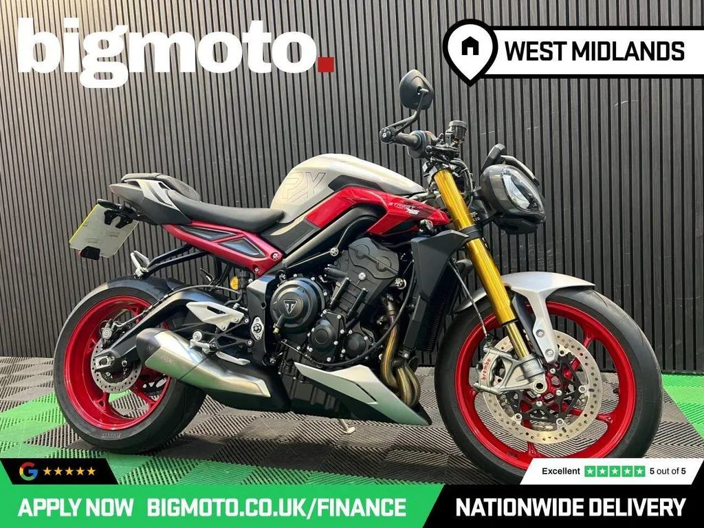

Triumph’s new cornering king
2026 Street Triple 765 RX
“The RX continually invites you to let go of the brakes and tip into corners ever quicker.”
“The dream ticket for both road and track.”

2026 Street Triple RX in silver, 728 miles, £10,789.
Seller: Big Moto West Midlands, Dudley · 01218053198
| Price | £10,789 |
|---|---|
| Year | 2026 |
| Miles | 728 miles |
| Model | Street Triple RX · Silver |
| Location / dealer | Big Moto West Midlands, Dudley |
| Distance from Poole | ≈ 124 miles as the crow flies (straight line from Poole BH15 1AA, estimated from “Dudley”) |
| On the lists | All bikes |
| Registration | KY26 FMF (stated in ad (listing data)) |
| Previous keepers | 0 (ad) |
| Seller type | Trade (ad) |
| Listed | 2 days ago as of 13 Oct 2026 (Gumtree) |
| Condition (ad) | Used |
| Gumtree vehicle check | not a write-off, not stolen, not scrapped, not exported, original colour |
| Price history (MCN) | £10,989 → £10,789 |
| Phone (ad) | 01218053198 |
| Also listed on | Gumtree |
| From the ad | “14-03-2026 0 owners . Need finance? We're here to help! We are Finance Experts, APPLY ONLINE NOW AT OUR WEBSITE! HP or PCP, we've options to suit your circumstances*Need Delivery? No problem! We deliver to the entire mainland UKGot a Part Exchange? No Problem! Go to our website now to get a valuationFull details regarding this bike including further pictures, walkaround videos and servicing details are on our websit…” |
Facts marked (ad) come from the listing. Ask the seller to show you the paperwork.
Several 2023–24 RS owners on MCN say the quickshifter stopped working at under 2,000 miles. Triumph has since revised the sensor, and dealers replaced it under warranty. Test both up and down shifts on a test ride, and ask whether the sensor has already been replaced. Source: MCN owners’ reviews ↗
MCN notes one owner reporting an engine coolant leak. Look for damp patches or crusty residue around the engine cases, the water pump and the radiator hoses. Source: MCN review ↗
Triumph’s technical bulletin TB262 covers the 765 R, RS, RX and Moto2. It is a workshop bulletin, not a safety recall. If thin valve shims are needed at a valve-clearance check, the dealer must fit updated retainers (part 1131111). Ask whether it has been done, and check for any outstanding recalls on the frame number. Source: Triumph TB262 ↗
| Registration | KY26 FMF (stated in ad (listing data)) |
|---|---|
| Make / model | Triumph Street Triple Rx |
| Colour | Silver |
| Engine | 765 cc |
| First registered | 14 March 2026 |
| Year of manufacture | 2026 |
| V5C (logbook) issued | 14 March 2026 |
| Tax | Expired: 18 Aug 2026 |
| MOT | First MOT due 13 Mar 2029 |
| Marked for export | No |
No MOT tests yet. The bike is under 3 years old, and the first MOT is due on the date above.
Sources: Total Car Check (DVLA data) · CarCheck (MOT tests) · GOV.UK MOT history. Checked 12 Oct 2026.
| Spec | 2026 RX |
|---|---|
| Power | 130PS @ 12,000rpm |
| Torque | 80Nm @ 9,500rpm |
| Weight | 188kg wet |
| Seat height | 839mm |
| Front suspension | Öhlins NIX30, fully adj. |
| Rear suspension | Öhlins STX40, fully adj. |
| Front brakes | 2×310mm, Brembo Stylema, OC-ABS |
| Electronics | Cornering ABS & TC, Track mode, clip-ons |
| Fuel tank | 15L |
Sources: Triumph UK – Street Triple 765 spec · Triumph media – 2023 range · Triumph – Moto2 spec · Triumph UK – 765 RX · Triumph media – 2020 RS · MCN – 2020–22 RS review · Motorcycle.com – 2020 RS first ride · Motorcycle.com – 2020 R first look
“The RX continually invites you to let go of the brakes and tip into corners ever quicker.”
“The dream ticket for both road and track.”
Seller: Big Moto West Midlands, Dudley · 01218053198